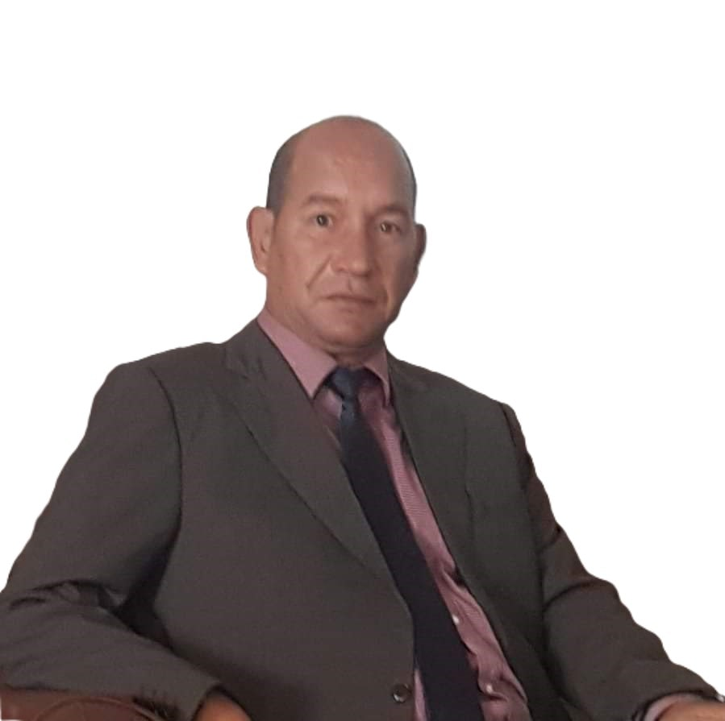
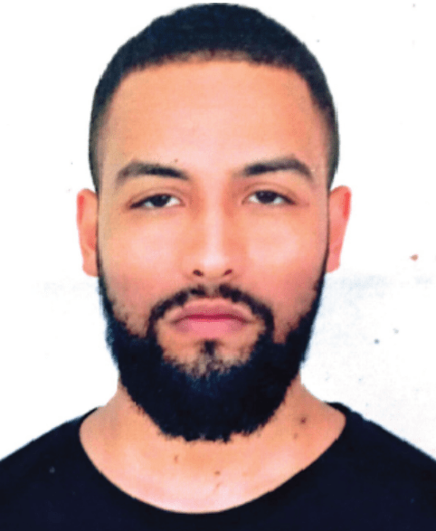

Notre Équipe
Des experts passionnés à votre service
Abdellah LAMZOUD
Directeur du cabinet de formations et consulting
Expertise :
- Accompagnement juridique et stratégique des entreprises et particuliers
- Développement territorial (foncier, urbanisme)
- Gestion des collectivités territoriales et droit international des affaires
- Optimisation de la gestion juridique et sécurisation des transactions
- Création d'entreprise et résolution de litiges
Saida TAHTOUH
Responsable de l'accueil et de l'animatio
Expertise :
- Formation et juriste d'affaires (Master en droit des affaires)
- Optimisation de la communication avec les clients
- Maîtrise des procédures contentieuses
- Expertise en droit de la concurrence
- Accompagnement des entreprises commerciales et industrielles
Ilham RAHIOUI
Responsable commercial
Expertise :
- Stratégies commerciales B2B et B2C
- Marketing stratégique et opérationnel
- Gestion des relations clients
- Développement commercial secteurs industriels
Drissia CHARBAK
Secrétaire
Expertise :
- Accompagnement psychologique enfants et adultes
- Coaching et développement personnel
- Animation d'ateliers thérapeutiques
- Éducation spécialisée
- Soutien aux familles vulnérables
- Formation en secourisme
Fatima SBAI
Formatrice professionnelle en leadership, développement personnel et environnement durable
Expertise :
- Titulaire d'un Doctorat
- Développement des compétences : Soft Skills, Leadership et Intelligence Émotionnelle
- Études techniques : Impact environnemental et évaluation stratégique
- Développement durable et gestion des risques secteurs miniers et énergétiques
- Organisation d'événements : congrès, meetings et festivals
- Intervention auprès des entreprises industrielles et commerciales
- Conception et suivi de projets sociaux et environnementaux
- Protection de l'environnement et gestion des risques
Lamiae TOUZANI
Formatrice en soft skills et coaching
Expertise :
- Accompagnement en coaching
- Techniques de communication
- Formation en soft skills
- Développement personnel

Lahcen EL BARMI
Formateur expert en informatique appliquée et systèmes d'information
Expertise :
- Formation des ingénieurs en informatique
- Encadrement de projets de recherche
- Développement d'infrastructures pédagogiques innovantes
- Formation adaptée aux évolutions technologiques
Nour-Eddine ABDELBAKI
Formateur expert en management et économie sociale
Expertise :
- Management durable : Innovation et efficience
- Entrepreneuriat social et développement durable
- Promotion de l'inclusion et de la durabilité
- Amélioration de l'efficacité des formations
Mohammed BELBACHIR
Formateur expert en management et entrepreneuriat
Expertise :
- Innovation et compétitivité entrepreneuriale
- Management et gestion de projets
- Élaboration de business plans (INDH, Cleantech/GCIP)
- Accompagnement des startups et coopératives
- Formation ANAPEC, faculté, OFPPT, ISTL, ICOGER et encadrement académique
Hassan NACIRI
Expert et professionnel en animation et gestion des entreprises
Expertise :
- Animation sur la gestion des entreprises
- Formation en psychologie de l'entrepreneuriat
- Accompagnement des jeunes porteurs de projets
- Formation au sein des établissements de l'OFPPT
Said BRIBICH
Formateur expert en économie et gestion
Expertise :
- Analyse économique approfondie
- Gestion d'entreprise et optimisation
- Adaptation aux enjeux économiques actuels
- Formation théorique et pratique avancée
Rachid ZAMMAR
Enseignant chercheur & Formateur
Expertise :
- Développement et Pédagogie
- Management et Leadership
- Entrepreneuriat & Gestion
- Compétences Relationnelles
- Autonomie Professionnelle
- Digital Skills
Younes EL HAKYM
Professeur universitaire et expert en développement
Expertise :
- Expertise en droit privé et gestion de projets sociaux
- Développement humain et intégration socio-économique
- Promotion de l'égalité des genres
- Accompagnement des populations vulnérables
Lahbib NAIMI
Formateur expert en informatique et génie logiciel
Expertise :
- Développement d'applications Web et Mobile
- Enseignement universitaire en informatique
- Génie logiciel et systèmes d'information
- Développement de jeux éducatifs
- Expérience internationale (Programme KLIC - Corée du Sud)
- Formation en nouvelles technologies
Loubna ANSARI
Formatrice en communication et rhétorique
Expertise :
- Analyse des dynamiques sociales
- Recherches empiriques et médiation
- Animation d'événements et festivals
- Formation pour administrations publiques
Maryam EL-YAZIDI
Formatrice experte en hydrologie et géosciences
Expertise :
- Hydrologie et gestion des ressources hydriques
- Géosciences et changement climatique
- Géomatique appliquée
- Modèles prédictifs et analyses environnementales
Mohamed BELADDA
Formateur en gestion des ressources humaines et développement territorial
Expertise :
- Formation des élus et présidents des communes territoriales
- Gestion des ressources humaines et management d'équipes
- Développement territorial et administration locale
- Formation des administrateurs territoriaux
Afaf CHOUKHMANE
Doctorante en Droit des Affaires & Juriste d'Affaires
Expertise :
- Conseil Juridique
- Gestion des Contrats & Litiges
- Veille Juridique et Fiscale
- Droit des Affaires & Micro-Assurance
- Recouvrement et Gestion Financière
- Rédaction de Documents Juridiques
Aimad AKRIM
Formateur et consultant en maintenance biomédicale
Expertise :
- Maintenance biomédicale et électromécanique
- Solutions en chimie et environnement
- Gestion des équipements biomédicaux
- Expertise pour laboratoires et centres de recherche
Nabil EZZEMANI
Formateur expert en entrepreneuriat, coaching, communication et management
Expertise :
- Innovation et entrepreneuriat
- Communication et coaching
- Management et leadership
- Développement des compétences entrepreneuriales
- Stratégies d'innovation
Ismail ANOIRI
Formateur en systèmes embarqués avancés et intelligence artificielle
Expertise :
- Conception et analyse des systèmes complexes
- Intelligence artificielle et systèmes embarqués
- Technologies avancées pour l'industrie
- Solutions pour l'automobile et l'aéronautique
Fouzia AZMI
Formatrice spécialisée en stratégie commerciale et digitalisation
Expertise :
- Stratégie commerciale
- Transformation digitale
- Marketing digital
- Solutions digitales pour entreprises
El Mahdi HAMDAOUI
Formateur consultant et manager de projet
Expertise :
- Cadre supérieur
- Gestion de projets et formation professionnelle
- Développement associatif et communautaire
- Renforcement des capacités des jeunes
- Promotion de l'auto-emploi
- Soutien à la bonne gouvernance locale
- Accompagnement des associations locales et coopératives
- Développement des acteurs communautaires

Mohamed BELHAJJI
Chargé de ressources humaines
Expertise :
- Gestion RH et recrutement
- Administration de la paie
- Communication interne
- Digitalisation des processus RH
Boukil LAMZOUD
Formateur consultant en génie civil et topographie
Expertise :
- Suivi des travaux et contrôle qualité
- Topographie pratique et chantiers
- Supervision des paiements prestataires
- Expertise pour bureaux d'études
Amine TABARANI
Formateur en sécurité et maintenance industrielle
Expertise :
- Prévention des risques et conformité réglementaire
- Maintenance industrielle et inspection des équipements
- Formation des conducteurs d'engins
- Application des normes de sécurité
Hasnaa CHEHABI
Formatrice experte en développement durable et management public
Expertise :
- Management des projets : Montage et pilotage
- Évaluation des politiques publiques et PPP
- Communication managériale interne et externe
- Création et développement des métiers verts
- Animation d'ateliers de renforcement des compétences
Badreddine HAFDANE
Formateur & Expert en Énergies Renouvelables
Expertise :
- Maintenance Mécanique
- Hydraulique Industriel
- Gestion de Maintenance
- Planification des Opérations
- Travail en Équipe
- Formation & Sécurité